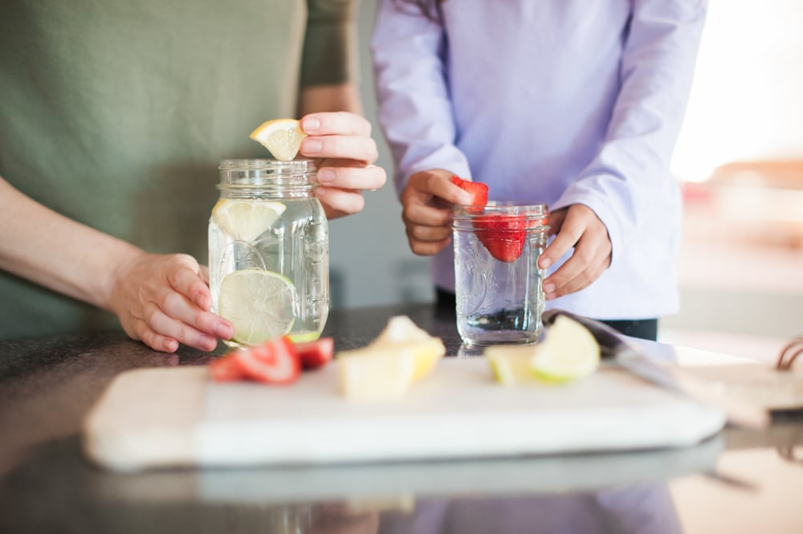
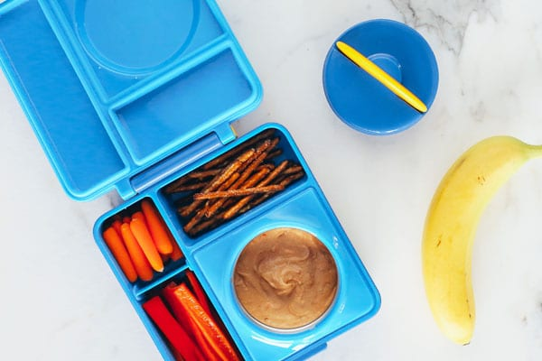
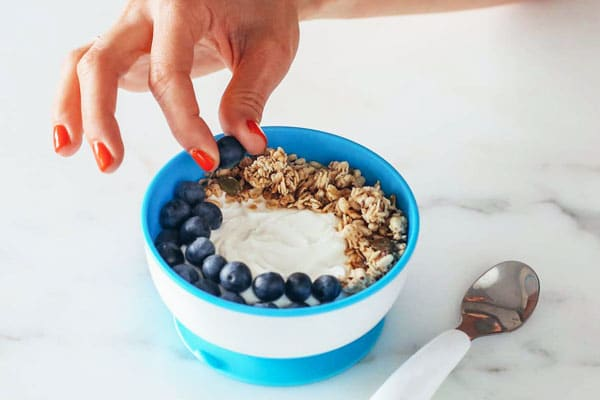

Easy, Healthy Alternatives Everyone Should Know
Replace Jam with Smashed Avocado
Jam is often filled with added sugars! Avocado’s fiber and cholesterol-lowering monounsaturated healthy fats will keep you full and satisfied well into the afternoon—especially when it’s paired with an egg or two.
Replace Egg Whites With Whole Eggs
Which is healthier? This has been an age old question with some scientific studies to backup the support of whole eggs. As it turns out, eating whole eggs is far healthier than sticking to the whites. This is because the yellow contains a fat-fighting nutrient called choline, so opting for whole eggs can actually help you trim down.
Replace Creamer with Organic Whole Milk
There’s a long list of how unhealthy creamers are for your body including: they’re made with a nasty combination of water, sugar, soybean oil, and corn syrup and they typically contain carrageenan, a stabilizer that’s linked to inflammation. Additionally, one serving is considered one tablespoon, but, an average unmeasured pour equals four times that amount.For a healthy alternative, go with organic whole milk and a bit of cinnamon or nutmeg for flavor. The calcium in it can help counter the calcium-robbing aspects of the caffeine, and it’s a great way to get vitamins A, D, and B12 (which are vital for bone health)
Ditch Sour Cream for Greek Yogurt
Instead of topping your chili and tacos with sour cream, mix some Greek yogurt with cilantro and taco seasoning. This will add flavor and will save you calories and fat while adding some additional protein to your plate.
Healthy Alternatives When You are Craving Sweet
Fresh Fruit
Fruit is naturally very sweet and one of the best healthy alternatives when you get a sugar craving. It can be eaten frozen in a smoothie or cut up into bite size pieces. To make your fruit feel more like a treat, try dipping it in a little dark chocolate or making a mixed fruit bowl.
Ice Cold Drink
If you are craving a sugary soda or juice, it could just be your body trying to tell you that you’re thirsty! Try opting for a healthier alternative to quench your thirst and satisfy your need for something other than regular water. Instead of that soda, try drinking iced tea or carbonated water. In order to make it feel like more of a treat, add lots of ice and a slice of lemon.
Healthy Alternatives When You are Craving Salty
Popcorn
Although popcorn is an amazing low-calorie alternative to chips, preparation method, serving size and topping choice are key when choosing a healthy popcorn to snack on. You can keep your popcorn snack healthy by choosing air-popped, plain or slightly salted popcorn and watching your serving size.
Roasted Chickpeas
Chickpeas, also known as garbanzo beans, are part of the legume family. Chickpeas are a rich source of vitamins, minerals and fiber, chickpeas may offer a variety of health benefits, such as improving digestion, aiding weight management and reducing the risk of several diseases. Additionally, chickpeas are high in protein and make an excellent replacement for meat in vegetarian and vegan diets.
Healthy Alternatives When You are Craving Creamy
Chia Pudding
Chia seeds are a great addition to anyone’s diet and contain alpha-linolenic acid omega-3 fatty acids, which are high in fiber, gluten-free, and a good source of protein. Here’s a quick recipe for you: First, use three-fourths cup chia seeds plus three cups of refrigerated coconut or almond milk. In a large bowl, combine the chia seeds and coconut milk, whisk together, let stand for 30 minutes at room temperature until the mixture thickens and then whisk again before setting it aside. Top each serving with fresh fruit and serve. So yummy!
Mashed Sweet Potato
Microwave a small sweet potato, split it open, and mash a little orange juice and cinnamon into it. Sweet potatoes are a rich source of fibre as well as containing an array of vitamins and minerals including iron, calcium, selenium, and they’re a good source of most of our B vitamins and vitamin C. This snack is healthy while still giving you that creamy texture.